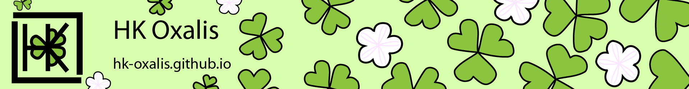
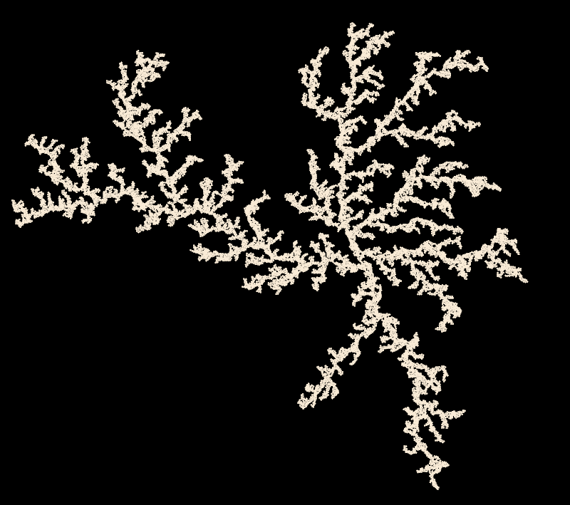
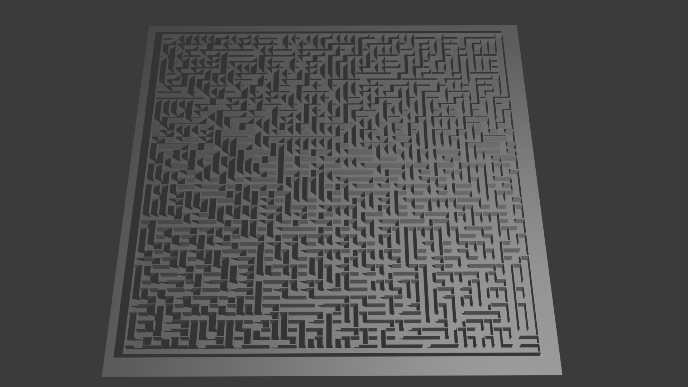
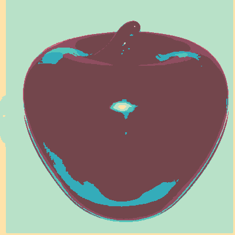
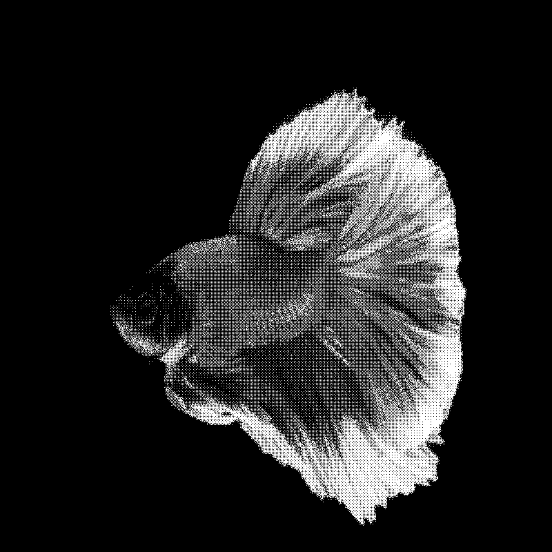

For the GMTK game jam 2025, I made this game, and all its space-themed art was made with GLSL shaders!

For the GMTK game jam 2025, I made this game, and all its space-themed art was made with GLSL shaders!

I decided to try learning the C++ OpenFrameworks library by implementing an algorithm that simulates lichen growth, as detailed in a 2001 paper by Robert Sumner.
My Christmas plans for 2024 involved using Python and OpenUsd to read images and generate 3D printable ornament models.

I used Python and the cutting edge OpenUsd API to translate Json files on 3d maze models. See more here!
Here's some Ui coding I did in Godot to act as a template for game jams.

I have this palette-based stylisation shader I first made in Unity adapted to GLSL here.
Here's a shader I wrote in GLSL that applies dithering to images!

You can see how it works here!